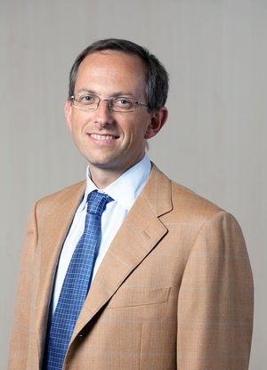
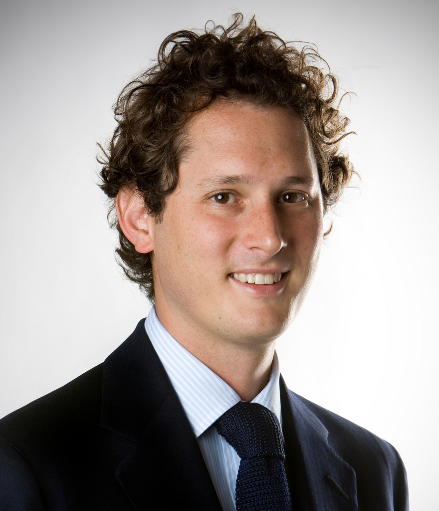

Kepemimpinan Ferrari

Enzo Ferrari
Pendiri (1898-1988)
Enzo Ferrari mendirikan perusahaan pada tahun 1939. Dikenal sebagai "Il Commendatore", ia memimpin Ferrari hingga kematiannya pada tahun 1988, menciptakan warisan yang tak tertandingi dalam dunia otomotif.

Benedetto Vigna
CEO (2021-Sekarang)
Bergabung dengan Ferrari pada tahun 2021, Vigna membawa pengalaman luas dalam teknologi dan inovasi. Di bawah kepemimpinannya, Ferrari mempercepat transisi menuju elektrifikasi sambil mempertahankan nilai-nilai inti merek.

John Elkann
Ketua (2018-Sekarang)
Sebagai ketua Ferrari dan CEO Exor, Elkann memimpin strategi jangka panjang perusahaan. Di bawah kepemimpinannya, Ferrari telah memperkuat posisinya sebagai merek mobil mewah yang paling berharga di dunia.